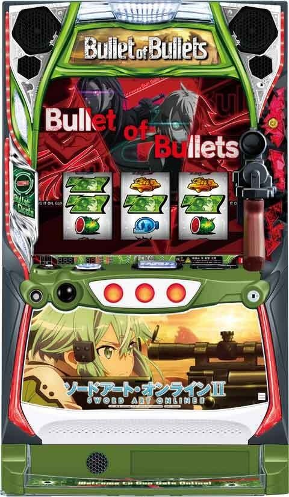
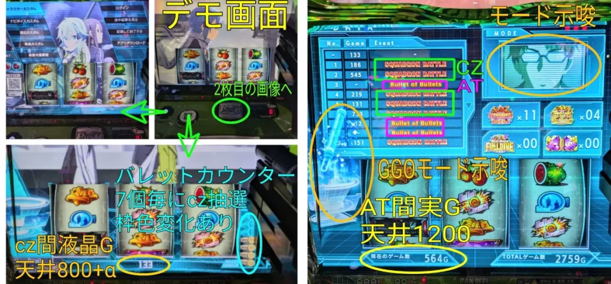
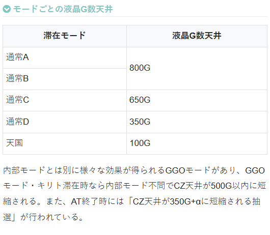
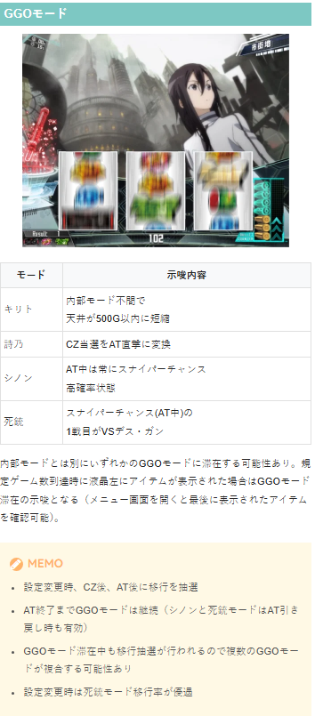
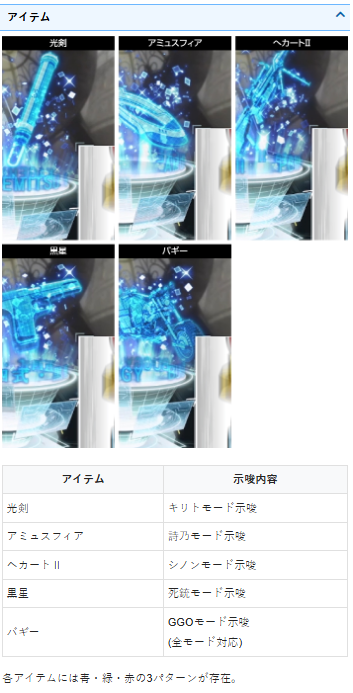
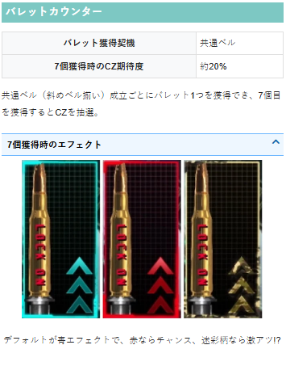
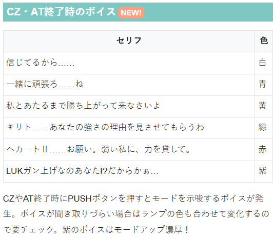
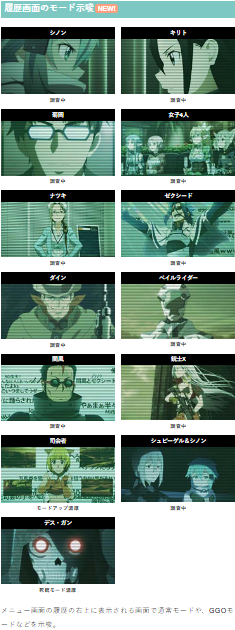
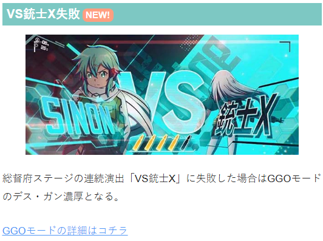
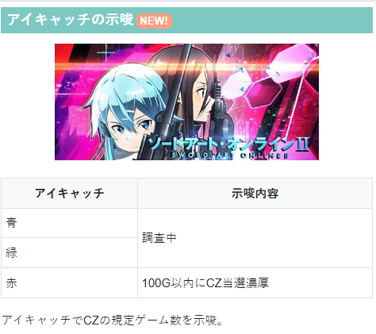

ソードアート・オンラインII

【天井情報】
AT間、最大1200G消化でATに当選。
初回の上位CZ「デス・ガンバトル」失敗後なら256G＋αでCZ天井が発動する（上位AT後の上位CZ失敗後は対象外なので注意）。
実ゲーム数
CZ間で最大499G＋αを消化するとCZに当選。
設定変更後は256G＋αに短縮。
液晶G数天井
液晶表示が最大800G+αでCZに当選。
【リセット判別】
不明
【有利区間について】
実戦上の挙動からエンディング等で有利区間をリセットすると上位CZ「デス・ガンバトル」に突入すると予想。
狙い目
実践値からの期待値表が出てこないタイプです。過去シリーズや他機種の似たタイプから、打てそうなラインを想定した狙い目となってます。
【リセット狙い】
CZ間（1回目のみ）
液晶150から
実ゲーム100Gから
【ゲーム数天井狙い】
AT間
800Gから（CZ間ハマりが浅い場合想定）
CZ間
液晶550から
実ゲーム400Gから
初回の上位CZ「デス・ガンバトル」失敗後 液晶100から
※初回の上位CZ「デス・ガンバトル」失敗後は目視していないと判断つかなそう？
【ゾーン狙い】
不明
【示唆関連の押し引きについて】
アイテム（赤の場合）
アミュスフィア（詩乃） CZかAT当選まで
へカートⅡ、黒星（シノン、死銃） AT当選まで
バギー（GGOモード滞在示唆） AT当選まで？
バレットカウンター
6個でも狙えないかも？
履歴画面のモード示唆
デス・ガン AT当選まで
VS銃士X失敗
AT当選まで
※総督府ステージの連続演出「VS銃士X」に失敗した場合はGGOモードのデス・ガン濃厚となる。
アイキャッチ
赤アイキャッチ 100G以内CZ当選濃厚のためCZ当選まで
【有利区間関連狙い】
不明
やめ時
どんな条件でもAT後50Gまで引き戻し確認した方が良さそう。
以下の場合は50Gまで引き戻し確認。
・上位AT後
・スナイパーチャンスで2回成功後（成功回数引き継ぐため）
・シノンモードまたは死銃モードだった場合（GGOモードも引き継ぐため？）
※AT終了後は不問で50Gまで回した方が良いか不明。心配なら50G回した方が良いかも。
※CZ後、AT後どちらもPUSHボタンを押してボイス確認。1G回してメニュー画面からモード示唆画面やアイテムなどを確認してからやめ。（示唆関連は現状解析がほぼ出ていないため詳細不明）
その他
メニュー画面
CZ間ハマりG数 デモ画面を解除した時に液晶下部の数値
AT間ハマりG数 メニュー画面左下の「現在のゲーム数」

参考元 すろぬー（Xから）
モードごとの液晶G数天井


アイテムアイコン

バレットカウンター

CZ・AT終了時のボイス

履歴画面のモード示唆

VS銃士X失敗

アイキャッチ

参考元
かめとうさぎのパチスロブログ